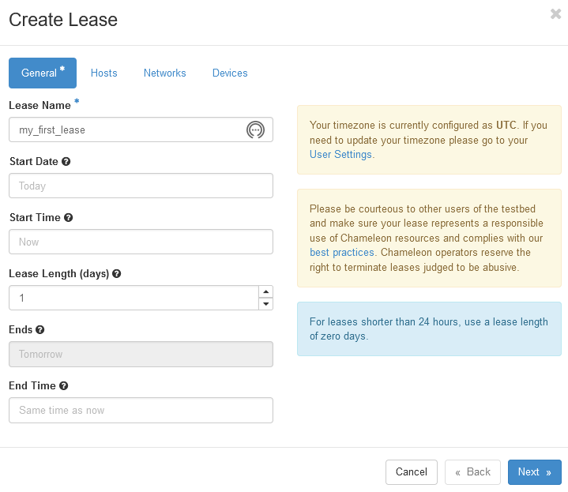
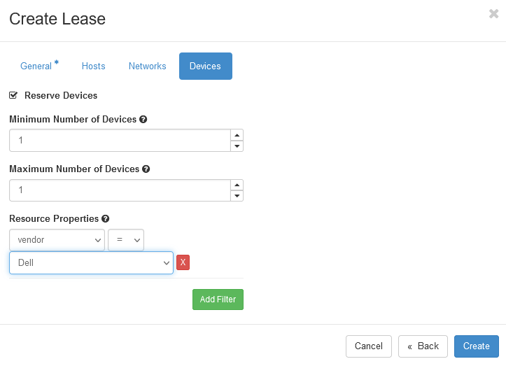
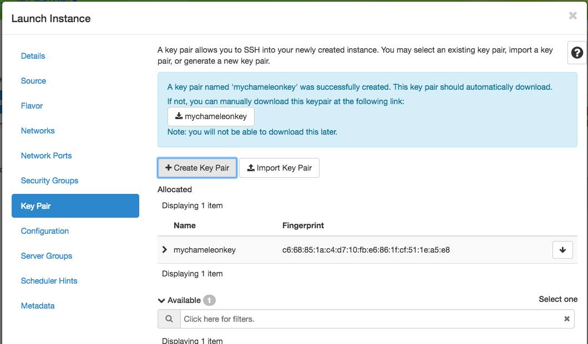
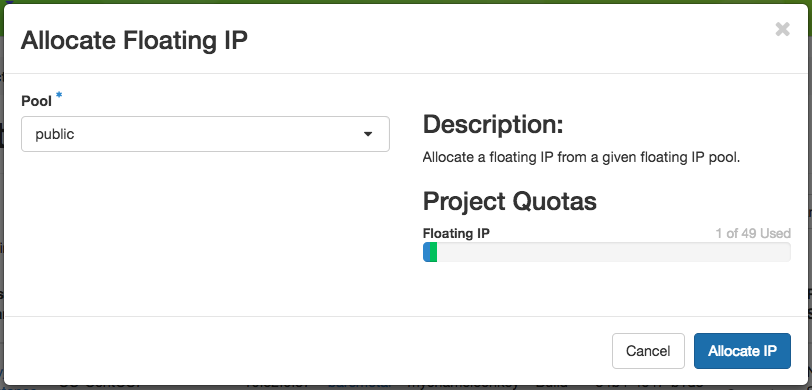

You can reserve worker nodes and radio resources, as well as defining networking for your experiments.
Worker nodes are servers in the testbed, where you do not have full access
to the actual server, but you can allocate and run Docker containerized applications on them.
When you reserve a worker node, you have exclusive access to the underlying server.
The following sections will describe how to make reservations and practically use the resources in the testbed.
Good luck!
First, we need to reserve a worker node for our use. ExPECA provides access to allocate and run
Docker containerized applications on nodes.
When you create a reservation for one or more nodes, only you
and other users on your project will be able to use those nodes for the time
specified. We will create a single day reservation for a worker node.
In the sidebar, click Reservations -> Leases
Click on the + Create Lease button in the toolbar
Type my_first_lease for the lease name
Check the Devices -> Reserve Devices box
Find the Devices -> Resource Properties section. In the dropdown below vendor, select Dell
Click the Create button


The Create Lease dialog - be sure to select Dell in the dropdown below vendor
The reservation will start shortly, at which point you can launch an instance.
Note
You have created an “on demand” reservation. When you do not specify a start
date or time in the future, the reservation will start as soon as possible
and will last one day.
Important
Do not attempt to stack reservations to circumvent the 7-day lease
limitation. Your leases may be deleted. Please refer to the best practices
if you require a longer reservation.
Click Keypair in sidebar. Click the + Create Key Pair button and enter
mychameleonkey for the key name. This will automatically start a download
for a file named mychameleonkey.pem. This is your private key pair that
you will use to access your instance.

You can create or import a public/private keypair for accessing your
instance.
Click the Launch Instance button.
Congratulations, you have launched an instance on a bare metal node!
Your instance may take approximately ten minutes to launch. The launch process
includes powering up, loading the operating system over the network, and booting
up for the first time on a rack located either at the University of Chicago or
the Texas Advanced Computing Center, depending on where you chose to launch your
instance. Before you can access your instance, you need to first assign a
floating IP address - an IP address that is accessible over the public Internet.
Go to the Floating IP dashboard by clicking on Network and Floating IPs
in the sidebar.
If you have a Floating IP not currently associated to an instance, click the
Associate button for the IP. A dialog will load that allows you to assign a
publicly accessible IP to your instance. Click the Associate button in the
dialog to complete the process of associating the public IP to your instance.
If you didn’t already have a Floating IP available, you may allocate one to
your project by clicking on the Allocate IP to Project button along the top
row in the Floating IP dashboard. A new dialog will open for allocating the
floating IP.

This dialog allows you to allocate an IP address from Chameleon’s public
IP pool
Click the Allocate IP button. The Floating IP dashboard will reload and you
should see your new Floating IP appear in the list. You can now go back to
step 2.
Once your instance has launched with an associated floating IP address, it can
be accessed via SSH using the private key that you downloaded during the
Launching an Instance step.
Open a terminal window and navigate to where you downloaded the
mychameleonkey.pem file. Change the permissions on the file to user
read/write only:
chmod600mychameleonkey.pem
Add the key to your current SSH identity:
ssh-addmychameleonkey.pem
Log in to your Chameleon instance via SSH using the cc user account and
your floating IP address. If your floating IP address was
129.114.108.102, you would use the command:
sshcc@129.114.108.102
Note
Change the IP address in this command to match your instance’s floating IP
address!